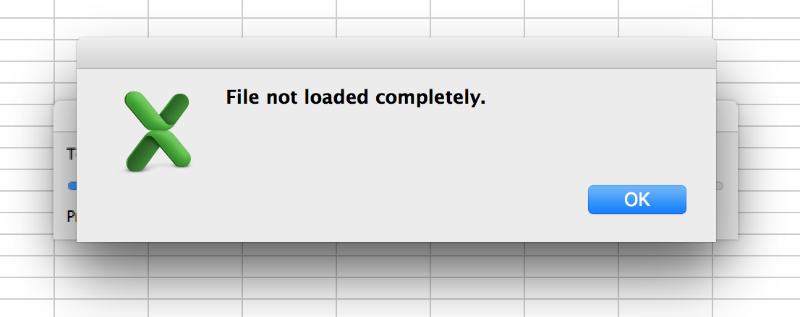
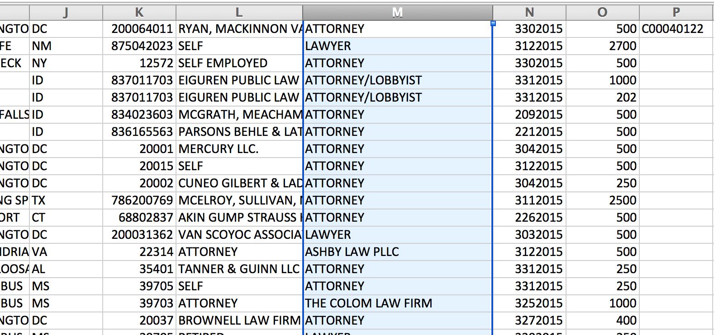

Regular Regular Expression Exercises
for Regular People
http://regex.danwin.com/Regular Regular Expression Exercises
for Regular People
http://regex.danwin.com/Words that begin with "love"
\blove
- A word boundary (e.g. whitespace, punctuation, or beginning of line).
- Followed immediately by the sequence
love
Chorus Now old desire doth in his death-bed lie, And young affection gapes to be his heir; That fair for which love groan'd for and would die, With tender Juliet match'd, is now not fair. Now Romeo is beloved and loves again, Alike betwitched by the charm of looks, But to his foe supposed he must complain, And she steal love's sweet bait from fearful hooks: Being held a foe, he may not have access To breathe such vows as lovers use to swear; And she as much in love, her means much less To meet her new-beloved any where: But passion lends them power, time means, to meet Tempering extremities with extreme sweet.
Regular Expression basics
(what can we match?)
love
everything with love
Chorus Now old desire doth in his death-bed lie, And young affection gapes to be his heir; That fair for which love groan'd for and would die, With tender Juliet match'd, is now not fair. Now Romeo is beloved and loves again, Alike betwitched by the charm of looks, But to his foe supposed he must complain, And she steal love's sweet bait from fearful hooks: Being held a foe, he may not have access To breathe such vows as lovers use to swear; And she as much in love, her means much less To meet her new-beloved any where: But passion lends them power, time means, to meet Tempering extremities with extreme sweet.
Words that begin with "love"
\blove
- A word boundary (e.g. whitespace, punctuation, or beginning of line).
- Followed immediately by the sequence
love
Chorus Now old desire doth in his death-bed lie, And young affection gapes to be his heir; That fair for which love groan'd for and would die, With tender Juliet match'd, is now not fair. Now Romeo is beloved and loves again, Alike betwitched by the charm of looks, But to his foe supposed he must complain, And she steal love's sweet bait from fearful hooks: Being held a foe, he may not have access To breathe such vows as lovers use to swear; And she as much in love, her means much less To meet her new-beloved any where: But passion lends them power, time means, to meet Tempering extremities with extreme sweet.
\blove\b
love and only love
Chorus Now old desire doth in his death-bed lie, And young affection gapes to be his heir; That fair for which love groan'd for and would die, With tender Juliet match'd, is now not fair. Now Romeo is beloved and loves again, Alike betwitched by the charm of looks, But to his foe supposed he must complain, And she steal love's sweet bait from fearful hooks: Being held a foe, he may not have access To breathe such vows as lovers use to swear; And she as much in love, her means much less To meet her new-beloved any where: But passion lends them power, time means, to meet Tempering extremities with extreme sweet.
\bl\w+
any word that begins with an `l`
Chorus Now old desire doth in his death-bed lie, And young affection gapes to be his heir; That fair for which love groan'd for and would die, With tender Juliet match'd, is now not fair. Now Romeo is beloved and loves again, Alike betwitched by the charm of looks, But to his foe supposed he must complain, And she steal love's sweet bait from fearful hooks: Being held a foe, he may not have access To breathe such vows as lovers use to swear; And she as much in love, her means much less To meet her new-beloved any where: But passion lends them power, time means, to meet Tempering extremities with extreme sweet.
\w+\.
any word that is followed by a period.
Chorus Now old desire doth in his death-bed lie, And young affection gapes to be his heir; That fair for which love groan'd for and would die, With tender Juliet match'd, is now not fair. Now Romeo is beloved and loves again, Alike betwitched by the charm of looks, But to his foe supposed he must complain, And she steal love's sweet bait from fearful hooks: Being held a foe, he may not have access To breathe such vows as lovers use to swear; And she as much in love, her means much less To meet her new-beloved any where: But passion lends them power, time means, to meet Tempering extremities with extreme sweet.
\w{10,}
every word that is at least ten characters long.
Chorus Now old desire doth in his death-bed lie, And young affection gapes to be his heir; That fair for which love groan'd for and would die, With tender Juliet match'd, is now not fair. Now Romeo is beloved and loves again, Alike betwitched by the charm of looks, But to his foe supposed he must complain, And she steal love's sweet bait from fearful hooks: Being held a foe, he may not have access To breathe such vows as lovers use to swear; And she as much in love, her means much less To meet her new-beloved any where: But passion lends them power, time means, to meet Tempering extremities with extreme sweet.
^[^Tt]+$
Chorus Now old desire doth in his death-bed lie, And young affection gapes to be his heir; That fair for which love groan'd for and would die, With tender Juliet match'd, is now not fair. Now Romeo is beloved and loves again, Alike betwitched by the charm of looks, But to his foe supposed he must complain, And she steal love's sweet bait from fearful hooks: Being held a foe, he may not have access To breathe such vows as lovers use to swear; And she as much in love, her means much less To meet her new-beloved any where: But passion lends them power, time means, to meet Tempering extremities with extreme sweet.
Data cleaning


((Donald )?Trump)
DONALD TRUMP MAY have bullied his way into the center of the American political arena, but during his Super Tuesday victory speech last week, the real action took place in the margins. That's where you could find Chris Christie apparently lost in reverie, his bewildering expressions instantly stealing the spotlight from Trump's choreographed Main Event. Twitter exploded with interpretations. Was he being held hostage? Realizing he had made a Gob Bluth-like "huge mistake"? Experiencing all the stages of grief simultaneously? Suddenly, Trump was only the nation's second-most-compelling political psychodrama. Within minutes, Viners had re-cut the video, editing Trump out of the frame entirely and zooming in on Christie's face. The supporting player had become the star.
A Man With The Best Hands
A Man With The Best Hands MAY have bullied his way into the center of the American political arena, but during his Super Tuesday victory speech last week, the real action took place in the margins. That's where you could find Chris Christie apparently lost in reverie, his bewildering expressions instantly stealing the spotlight from A Man With The Best Hands's choreographed Main Event. Twitter exploded with interpretations. Was he being held hostage? Realizing he had made a Gob Bluth-like "huge mistake"? Experiencing all the stages of grief simultaneously? Suddenly, A Man With The Best Hands was only the nation's second-most-compelling political psychodrama. Within minutes, Viners had re-cut the video, editing A Man With The Best Hands out of the frame entirely and zooming in on Christie's face. The supporting player had become the star.
Treat data like text
(because that's what it is)
Regex from the command-line with
grep
(or ack or ag)
globally search a regular expression and print
$ ack 'pattern' somefile
- Open and read a `somefile`, line by line
- If a line matches the given `pattern`
- Print that line
Looking for love
at the command-line with ack
- Type in the name of the program
ack - Type in the pattern
'love' - Type in the filename
romeoandjuliet
ack 'love' romeoandjuliet
Looking for long words in all of Romeo and Juliet
- Any sequence of word-characters, 10-or-more in a row
ack '\w{10,}' romeoandjuliet
Just show the match (i.e. the long word)
- Use the
-oflag to specify that we don't want to print the entire line.
ack -o '\w{10,}' romeoandjuliet
Sort the list of long words
- Use good old Unix pipes,
|, to send a line of text from one program to the other
ack -o '\w{10,}' romeoandjuliet | sort
How many unique words are there, and how many of each?
- Use another pipe,
|, to connect another program - Why do we have to sort before we count uniques? Because that's how helplessly dumb your computer (and every computer) is.
ack -o '\w{10,}' romeoandjuliet | sort | uniq -c
1 triumphant 3 unaccustom 1 unattainted 2 underneath 1 unfurnished 1 unpleasing 1 unreasonable 1 unsatisfied 1 unsubstantial 1 unthankfulness 1 unworthiest 1 whispering 1 wretchedness 1 yesternight
Make a word cloud (without the cloud part)
- Use another pipe,
|, to connect another call tosort - Use
sort's-nflag so that it sorts numerically and not alphabetically.
ack -o '\w{10,}' romeoandjuliet |
sort | uniq -c | sort -n
3 confession 3 counterfeit 3 inconstant 3 nightingale 3 oppression 3 philosophy 3 unaccustom 4 bridegroom 4 gentlewoman 5 honourable 5 lamentable 7 Apothecary 7 banishment 8 churchyard
Search all the files in all the folders

Search all the files in all the folders
ack -ho '\w{10,}' shakespeare/ |
sort | uniq -c | sort -n
Frequency count of "I [something]"
ack -ho 'I \w+' shakespeare/ |
sort | uniq -c | sort -n
325 I was 326 I say 344 I had 348 I must 394 I shall 395 I pray 403 I think 631 I know 656 I would 833 I do 1554 I will 1611 I have 1865 I am
Frequency count of "I am [something]"
ack -ho 'I am \w+' shakespeare/ |
sort | uniq -c | sort -n
18 I am for 22 I am too 23 I am as 24 I am bound 25 I am so 25 I am to 25 I am your 35 I am in 41 I am no 46 I am sorry 49 I am the 59 I am glad 70 I am sure 136 I am a 137 I am not
Frequency count of just the third word in "I am [something]"
ack -h 'I am (\w+)' --output '$1' shakespeare/ | sort | uniq -c | sort -n
22 too 23 as 24 bound 25 so 25 to 25 your 35 in 41 no 46 sorry 49 the 59 glad 70 sure 136 a 137 not
Frequency count of the fourth word in:
"I am [a or an or the] [something]"
ack -h 'I am (?:a|an|the) (\w+)' \
--output '$1' shakespeare/ |
sort | uniq -c | sort -n
3 son 3 subject 4 honest 4 maid 4 villain 5 soldier 5 true 5 very 6 ass 6 woman 7 king 8 poor 10 man 19 gentleman
Use the Twitter API to move data...
...from twitter.com...

...to plain text

...but not to a spreadsheet (yet)

Trump's hashtags?
- The
#character - Followed by one-or-more word characters
#\w+
#MakeAmericaGreatAgain #Trump2016" 707722045224833024,2016-03-10 00:17:39 +0000,realDonaldTrump,I will be giving a lengthy interview to @andersoncooper tonight at 8pmE from Florida. Watch on @CNN! #MakeAmericaGreatAgain #Trump2016 #LightweightSenatorMarcoRubio https://t.co/w7G5vJ511O" #MakeAmericaGreatAgain #Trump2016 https://t.co/hNkkRx66Hc" 707470040954761216,2016-03-09 07:36:16 +0000,realDonaldTrump,Thank you Hawaii! #Trump2016 707388018382995456,2016-03-09 02:10:20 +0000,realDonaldTrump,RT @RSBNetwork: LIVE Stream now: Donald Trump press conference #TrumpTrain #Trump2016 https://t.co/s7WgNXR27A 707386022569623552,2016-03-09 02:02:25 +0000,realDonaldTrump,Thank you Michigan! #Trump2016 707377544224509952,2016-03-09 01:28:43 +0000,realDonaldTrump,Thank you Mississippi! #Trump2016 707374051581362176,2016-03-09 01:14:50 +0000,realDonaldTrump,Thank you! #Trump2016 https://t.co/WvTkL8mMHY 707373529818386434,2016-03-09 01:12:46 +0000,realDonaldTrump,"Thank you America! #Trump2016
realDonaldTrump's most-frequent hashtags?
ack -o '#\w+' realdonaldtrump.csv | sort | uniq -c | sort -n
- Look for the pattern
#\w+ - Print only the match
- Sort the lines alphabetically
- Print the count of each unique string
- Sort the lines numerically
Who does realDonaldTrump mention?
@\w+
- The
@character - Followed by one-or-more word characters
707722839684685824,2016-03-10 00:20:48 +0000,realDonaldTrump,"I will be interviewed in a town hall format on @FoxNews with @seanhannity at 10pmE. Enjoy! 707722045224833024,2016-03-10 00:17:39 +0000,realDonaldTrump,I will be giving a lengthy interview to @andersoncooper tonight at 8pmE from Florida. Watch on @CNN! #MakeAmericaGreatAgain #Trump2016 707388018382995456,2016-03-09 02:10:20 +0000,realDonaldTrump,RT @RSBNetwork: LIVE Stream now: Donald Trump press conference #TrumpTrain #Trump2016 https://t.co/s7WgNXR27A 707353658883706880,2016-03-08 23:53:48 +0000,realDonaldTrump,"I hear @NBCNews / @WSJ came out with another one of their phony polls. While I am leading, they are totally discredited after last S.C. poll" 707351991807315968,2016-03-08 23:47:11 +0000,realDonaldTrump,RT @EricTrump: Aloha Hawaii: We would be honored to have your vote! Find your caucus https://t.co/iNgQS80mxX #TrumpWaikiki #Mahalo https://t.co/ggTwDLbSG7 707226089496690688,2016-03-08 15:26:54 +0000,realDonaldTrump,"""@EricTrump: Wishing our father tremendous luck in Michigan, Mississippi, Idaho & Hawaii today! Amazing father! https://t.co/cYpx4eC9W @Q""" 707225181513719808,2016-03-08 15:23:17 +0000,realDonaldTrump,Thank you @EricTrump! https://t.co/U1iTLmcbAc 707004752756936704,2016-03-08 00:47:23 +0000,realDonaldTrump,I will be interviewed by @SeanHannity tonight at 10pm EST on @FoxNews! Enjoy!
Who does realDonaldTrump most frequently mention?
ack -o '@\w+' realdonaldtrump.csv | sort | uniq -c | sort -n
20 @nytimes 20 @politico 21 @TheBrodyFile 22 @nbcsnl 23 @AnnCoulter 23 @greta 24 @DRUDGE_REPORT 25 @WSJ 26 @KarlRove 26 @MichaelCohen212 28 @ABC 35 @EricTrump 42 @Morning_Joe 46 @oreillyfactor 56 @seanhannity 60 @foxandfriends 68 @DanScavino 68 @megynkelly 80 @JebBush 165 @CNN 203 @FoxNews 1191 @realDonaldTrump
What words does @realDonaldTrump associate @JebBush with?
ack -io '\w+ \w+ @JebBush \w+' realdonaldtrump.csv
who supported @JebBush are now How can @JebBush beat Hillary time lightweight @JebBush tried to energy candidate @JebBush has wasted Sad sack @JebBush has just to the @JebBush campaign 3 idea for @JebBush whose campaign sorry for @JebBush and how millions about @JebBush when he is that @JebBush mother is failed candidate @JebBush said that just past @JebBush in the the ridiculous @JebBush ad about idea for @JebBush whose campaign leaders like @JebBush allowed 9 realDonaldTrump doubles @JebBush in New
What words does @realDonaldTrump associate @nyt accounts with?
ack -o '\w+ \w+ @nyt\w+ \w+' realdonaldtrump.csv
the failing @nytimes are The failing @nytimes does The failing @nytimes should at the @nytimes have at the @nytimes bought The failing @nytimes should in the @nytimes states of the @nytimes waving the false @nytimes story did the @nytimes fall and the @nytimesworld is
csvcut
csvcut -c 'column_name_1,column_name_9' somefile
Just print the "Posted at" column
csvcut -c 'Posted at' realdonaldtrump.csv
Posted at 2016-03-10 16:15:45 +0000 2016-03-10 00:20:48 +0000 2016-03-10 00:17:39 +0000 2016-03-09 23:00:30 +0000 2016-03-09 22:39:30 +0000 2016-03-09 21:46:12 +0000 2016-03-09 07:36:16 +0000 2016-03-09 03:58:28 +0000 2016-03-09 02:10:20 +0000 2016-03-09 02:02:25 +0000 2016-03-09 01:28:43 +0000 2016-03-09 01:14:50 +0000 2016-03-09 01:12:46 +0000 2016-03-08 23:58:02 +0000 2016-03-08 23:53:48 +0000
Matching year and month in the timestamp
csvcut -c 'Posted at' realdonaldtrump.csv |
ack '\d{4}-\d{2}'
- Print only the
Posted atcolumn - Match 4 digits, followed by a hypen, followed by 2 digits
2016-03-10 16:15:45 +0000 2016-03-10 00:20:48 +0000 2016-03-10 00:17:39 +0000 2016-03-09 23:00:30 +0000 2016-03-09 22:39:30 +0000 2016-03-09 21:46:12 +0000 2016-03-09 07:36:16 +0000 2016-03-09 03:58:28 +0000 2016-03-09 02:10:20 +0000 2016-03-09 02:02:25 +0000 2016-03-09 01:28:43 +0000 2016-03-09 01:14:50 +0000 2016-03-09 01:12:46 +0000 2016-03-08 23:58:02 +0000
Print the frequency of tweets per month
csvcut -c 'Posted at' realdonaldtrump.csv |
ack -o '(?<= )\d{2}(?=:)' |
sort | uniq -c
212 2015-07 441 2015-08 441 2015-09 815 2015-10 599 2015-11 634 2015-12 492 2016-01 495 2016-02 152 2016-03
Print the frequency of tweets per month as a CSV
csvcut -c 'Posted at' realdonaldtrump.csv |
ack -o '\d{4}-\d{2}' |
sort | uniq -c |
ack '(\d+) (.+)' --output '$2,$1'
2015-07,212 2015-08,441 2015-09,441 2015-10,815 2015-11,599 2015-12,634 2016-01,492 2016-02,495 2016-03,152
Import tweet-frequency-as-CSV into Excel
Print the frequency of tweets per day
csvcut -c 'Posted at' realdonaldtrump.csv |
ack -o '\d{4}-\d{2}-\d{2}' |
sort | uniq -c |
ack '(\d+) (.+)' --output '$2,$1'
2015-07-25,22 2015-07-26,39 2015-07-27,48 2015-07-28,33 2015-07-29,28 2015-07-30,27 2015-07-31,15 2015-08-01,7 2015-08-02,3 2015-08-03,47 2015-08-04,29 2015-08-05,21 2015-08-06,18 2015-08-07,60 2015-08-08,9 2015-08-09,14
Print the frequency of tweets per hour
csvcut -c 'Posted at' realdonaldtrump.csv |
ack -o '(?<= )\d{2}(?=:)' |
sort | uniq -c |
ack '(\d+) (.+)' --output '$2,$1'
00,250 01,248 02,264 03,255 04,138 05,89 06,50 07,23 08,42 09,57 10,85 11,174 12,230 13,242 14,216 15,233 16,194 17,190 18,198 19,237 20,231 21,211 22,187 23,237
Dealing with Big (for Excel) data as text
The Federal Election Commissions Individual Donors list
Up to 1.3 million records for 2015-2016 alone
Trying to import the individual donors data into Excel
But Excel can't handle more than a million rows.

csvgrep
Grep across selected columns (rather than the whole line)
csvcut -c 'column_name_1' -r 'mypattern' somefile
Filtering individual contributors by (self-proclaimed) job title
Looking for just the lawyers who contribute
ack 'LAWYER|ATTORNEY' indiv-contributions.txt
Looking for just the lawyers who contribute
ack 'LAWYER|ATTORNEY' indiv-contributions.txt | csvformat -d '|' > lawyers.csv
- Search for
LAWYERorATTORNEY - Convert the pipe-delimiters to commas
- Dump the text into
lawyers.csv
Result: 89,034 rows (small enough for Excel).
Moving fast is fun!
Do you know how to spell "Masha...cket Pequot"?
- Search for
MASH - followed by one-or-more uppercase letters
- followed by
CKET
ack 'MASH[A-Z]+CKET' indiv-contributions.txt
C00499947|A|Q2|P|201507229000355836|11|IND|TRIBAL NATION, MASHANTUCKET PEQUOT|MASHANTUCKET|CT|063383008|MASHANTUCKET PEQUOT TRIBAL NATION|INDIAN TRIBE|06292015|2700||C10408456|1017371|||4072320151247723686 C00350520|N|Q2|P|201507159000168044|11|ORG|MASHANTUCKET PEQUOT TRIBAL NATION|MASHANTUCKET|CT|06338|||06292015|1000||INCA57787|1015196|||4071520151247122864 C00459925|N|MY|P|201507309000462796|11|ORG|MASHANTUCKET PEQUOT TRIBAL NATION|MASHANTUCKET|CT|063383008|||06302015|400||C9365215|1019170|||4073120151248086910 C00505552|N|Q2|P|201507150200189449|11||MASHANTUCKET PEQUOT TRIBAL NATION|MASHANTUCKET|CT|063383008|||05132015|2700||SA072715944929|1018152|||2072820151247977899 C00167320|N|M8|P|201508209000867724|11|ORG|MASHANTUCKET PEQUOT TRIBAL NATION|MASHANTUCKET|CT|06338|||07102015|1185||C21496835|1022541|||4082020151249343429
Does the Mashantucket Pequot know how to spell "Mashantucket"?
- Search for
FU - followed by any word character
- followed by a
Kcharacter
ack -o 'MASH[A-Z]+CKET' indiv-contributions.txt | sort | uniq -c
2 MASHANFUCKET 56 MASHANTUCKET
Just how many F*UCKs have been given to 2015-2016 campaigns?
- Search for
FU - followed by any word character
- followed by a
Kcharacter
ack -o 'FU\wK' indiv-contributions.txt | sort | uniq -c
5 FUCK 52 FULK 207 FUNK 4 FURK 10 FUSK
And who exactly are these F*CKs?
- Any 25 characters
- Then, the sequence
FUCK - Then, the next 25 characters
ack -o '.{25}FUCK.{25}' indiv-contributions.txt
2010200020023|21Y||MASHANFUCKET PEQUOT TRIBAL NATION|M 2010200020023|21Y||MASHANFUCKET PEQUOT TRIBAL NATION|M 420|SELF EMPLOYED MOTHER FUCKER|ELECTRICIAN|12102015|5 481769315|HEARST|BAD-ASS FUCKING PROFESSIONAL CHILD|12 180|SELF EMPLOYED MOTHER FUCKER|ELECTRICIAN|12102015|5
Big data joining
Who donates to Trump's campaign committees?
ack 'TRUMP' committees.txt
But what are Trump's (real) committees?
C00420679|EDDIE 4-TRUMP HAMILTON- US SENATE 2016|EDWARD HAMILTON|107 KAVA KAVA STREET||HENDERSON|NV|89015|P|S|REP|A||| C00580100|DONALD J. TRUMP FOR PRESIDENT, INC.|JOST, TIMOTHY|725 FIFTH AVENUE||NEW YORK|NY|10022|P|P|REP|M|||P80001571 C00583716|DONALD TRUMP ORGANIZATION|MR DONALD J TRUMP|725 FIFTH AVENUE||NEW YORK|NY|10022|P|P|REP|Q||| C00585836|THE COMMITTEE TO STOP TRUMP|BUTLER, ROBERT D MR.|1000 HERITAGE CENTER CIRCLE||ROUND 8|TX|78664|U|U||Q||| C00586826|PATRIOTS FOR TRUMP|SCOTT B MACKENZIE|2776 S ARLINGTON MILL DR #806||ARLINGTON|VA|22206|U|O||T||| C00587360|TRUMPET! PAC|LUCAS CONNOR|PO BOX 751826||FAIRBANKS|AK|997751826|U|O||Q||| C00588319|LET'S TRUMP POLITICS|THOMAS COOPER|911 S 8TH AVE||LA GRANGE|IL|60525|U|O||Q||| C00590398|TEXANS FOR TRUMP|COSSUM, ZAC|1412-B STONEHOLLOW DR.||KINGWOOD|TX|77339|U|U||Q||| C00591008|VETERANS FOR TRUMP SUPER PAC|FERNANDEZ, BERNADINE LANIHOU MS|6225 ILANOS LN #B||LAS VEGAS|NV|89108|U|U||T||| C00591115|AMERICAS TRUMP CARD SUPER PAC|WOISSEL, BRITTANY|12808 LOWER RIVER BLVD||ORLANDO|FL|32828|U|O||T||| C00594564|TRUMP USA SUPER PAC|STEPHEN B MCKANNA|PO BOX 998||MONROE|WA|98272|U|O||Q||| C00605691|INDIAN-AMERICANS FOR TRUMP 2016|MAKKAR, DEVENDRA (DAVE)|11 PINEWOOD LANE||WARREN|NJ|07059|U|U||Q||NONE| C00609073|VETERANS FOR TRUMP|SHIHADEH, OMAR|3481 LAKESIDE DRIVE NE|SUITE 2803|ATLANTA|GA|30326|U|O||Q||| C00610105|TRUMP OR CANCER PAC|PINTO, JOHN|31 IRVING ST #2||BOSTON|MA|02114|U|O||Q||| C00610907|NEVERTRUMP PAC|SPURLOCK, CAROLYN NELSON|P. O. BOX 320834||ALEXANDRIA|VA|22320|U|O||Q||NONE| C00611020|TRUMP HAS TINY HANDS PAC|KRAEMER, HENRY|1621 NE KILLINGSWORTH ST.|APT. 7|PORTLAND|OR|97211|U|U||Q||NONE| C00611160|NEVERTRUMP.ORG|MARSTON, CHRIS|PO BOX 26141||ALEXANDRIA|VA|22313|U|O||Q||NONE| C90015728|TRUMPAC||107 S WEST ST|STE 555|ALEXANDRIA|VA|22314|U|I||Q|||
Get a list of Trump's possible committee IDs
- In the committees file...
- Match all lines that have
TRUMPsomewhere - Pipe them into another ack to match the first one-or-more word characters starting from the beginning of each line.
- (i.e. the committee id)
- Output just the matches into a new text file,
trumpc.txt
ack 'TRUMP' committees.txt |
ack -o '^\w+' > trumpc.txt
C00420679 C00580100 C00583716 C00585836 C00586826 C00587360 C00588319 C00590398 C00591008 C00591115 C00594564 C00605691 C00609073 C00610105 C00610907 C00611020 C00611160 C90015728